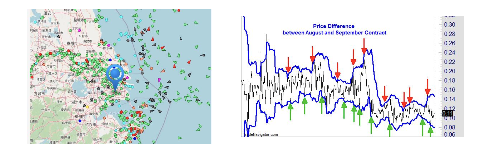
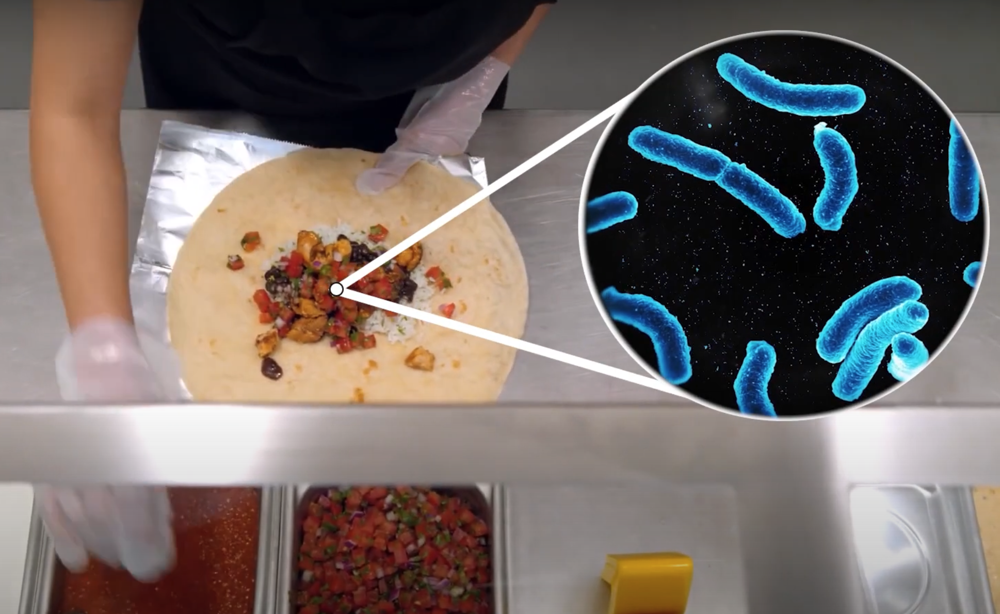

金融大数据的应用场景#
在过去数十年，随着大数据、人工智能、区块链、云计算等前沿技术的快速发展，越来越多的技术被应用于金融服务和提升金融行业的效率和安全。
1. 大数据技术降低信贷违约风险#
信贷分析是由贷款人为了评估潜在借款人的信用状况而进行的一项流程，旨在了解借款人偿还本金和利息债务的能力和可能性。
借款人，也称为债务人，可以是个人或商业实体；前者被称为零售（或个人）贷款，后者被称为商业贷款。
贷款人，也称为债权人，会采用各种定性和定量技术（包括风险模型）来量化和有效地定价风险。
{kind=link}
传统的信用评估主要依靠借款人的信用记录，例如还款历史、负债率等进行评估。然而，这种方法存在以下局限性。1）数据维度有限: 传统信用评估主要依赖于银行等金融机构提供的信贷数据，数据维度有限，无法全面刻画借款人的信用状况。2）评估模型简单: 传统信用评估模型通常采用线性回归等简单模型，缺乏对非线性关系的捕捉能力。3）评估结果不够精准: 传统信用评估方法容易受到人为因素的影响，导致评估结果不够精准。
大数据技术和机器学习算法的应用为信用评估带来了新的机遇。大数据技术可以从互联网、社交媒体等多个维度采集数据，丰富借款人的信用画像，全面刻画借款人的信用状况。机器学习算法可以学习数据中的非线性关系，构建更加复杂的评估模型，并提高评估效率。在决策过程中，帮助金融机构更准确地评估借款人的信用风险，从而做出更合理的贷款审批决策。在放款后，帮助金融机构根据借款人的信用状况动态调整信贷额度。最终，帮助金融机构识别潜在的信用风险，降低信贷违约率。
2. 投资者情绪预警股市风险#
美国投资者的协会情绪调查 (AAII)每周都会对美国投资者进行情绪调查，调查内容包括投资者对未来六个月股市的乐观程度、悲观程度以及中立程度。 研究表明，AAII 调查指数与股市走势具有负相关关系，当AAII 调查指数过高时，往往预示着股市即将下跌。
{kind=link}
{kind=link}
基于投资者情绪的股市风险预警是一种通过分析投资者情绪指标来预测股市风险的方法。投资者情绪指标可以包括市场情绪指数、投资者情绪调查、新闻情绪指标等。这些指标可以反映投资者对市场的情绪和情感态度，如恐惧、贪婪、乐观等。通过监测和分析这些指标的变化，可以提前发现投资者情绪的转变，从而预测股市的风险水平。这种方法可以帮助投资者和金融机构更好地把握市场情绪，及时调整投资策略，降低投资风险。
3. 基于航运数据进行期货套利交易#
基于航运数据的期货套利交易是一种利用航运数据进行期货市场套利的交易策略。航运数据包括船舶运输量、航线运输成本、港口拥堵情况等信息。这些数据可以反映全球贸易活动和供应链运输情况。基于这些数据，交易者可以分析和预测航运市场的供需关系和价格变动趋势。

在期货市场中，交易者可以通过买入或卖出相关期货合约来参与航运市场的套利交易。如何操作呢？
如果航运数据显示供应过剩，运输成本下降，交易者可以预测航运市场价格下跌，然后在期货市场上卖出相关期货合约，以获得价格下跌的收益。
相反，如果航运数据显示供应紧张，运输成本上升，交易者可以预测航运市场价格上涨，然后在期货市场上买入相关期货合约，以获得价格上涨的收益。
举例：
2021年集装箱运价暴涨：2021年，全球新冠疫情导致供应链中断，集装箱运输需求激增，运价大幅上涨。一些交易者利用航运数据分析了全球集装箱运输供需关系，预测运价将继续上涨，并在期货市场上买入了集装箱运价期货合约，获得了丰厚收益。
2023年航运市场低迷：2023年，全球经济增长放缓，贸易活动下降，航运市场需求减弱，运价大幅下跌。一些交易者利用航运数据分析了全球贸易活动和供应链运输情况，预测运价将继续下跌，并在期货市场上卖出了航运运价期货合约，获得了收益。
这种基于航运数据的期货套利交易策略可以帮助交易者利用航运市场的信息来进行风险管理和投资决策，以获取更好的投资回报。
4. 停车场的卫星照片预知股价下跌#
2015年10月，Chipotle(墨西哥卷饼连锁店)遭遇了一次严重的食品安全危机，有顾客在弗吉尼亚州的Chipotle餐厅就餐后生病，导致Chipotle不得不关停弗吉尼亚州内的43家门店进行消毒，其他门店的单店营收也下滑30-50%。在一连串食源性疾病爆发后，Chipotle的销售额骤降，2016年1月，当时Chipotle的同店销售额下降约36%。
{kind=link}
{kind=link}
{kind=link}
食品安全危机发生后，Orbital Insights（一家卫星公司）利用卫星图像分析了 Chipotle 餐厅外的停车流量。他们发现，在食品安全危机爆发后，停车流量出现了明显下降。于是，将这一发现告知了其客户，帮助他们提前获知了Chipotle 股价下跌的消息。
卫星照片预知股价下跌的方法虽然有一定的理论基础和应用潜力，但也存在一些限制和挑战。例如，数据分析的准确性可能受到卫星图像分辨率和采集频率的限制，以及数据解释的主观性影响。此外，股价受多种因素影响，单一数据源可能无法全面反映市场的复杂变化。
讨论：#
假如你拥有了一颗卫星，你会怎样将其应用于金融市场？
大数据技术还可以应用到哪些金融场景？
参考#
美国-AAII 散户投资人情绪指数，https://www.aaii.com/sentiment-survey
orbital insight公司, https://orbitalinsight.com